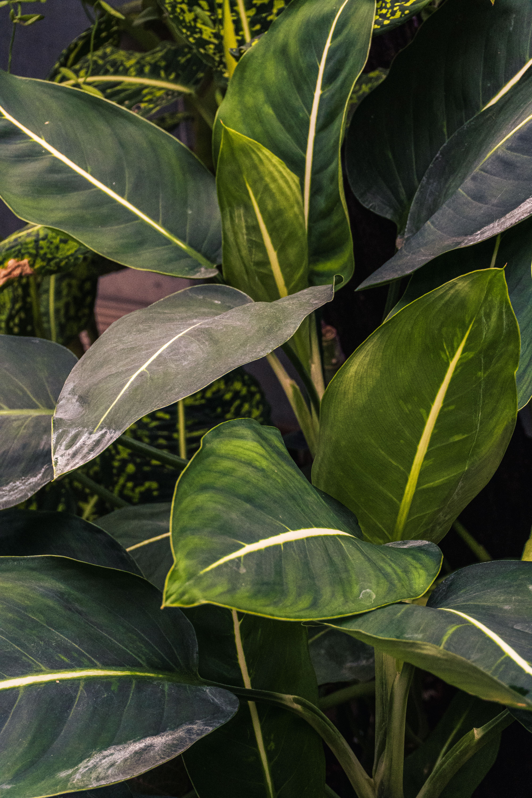
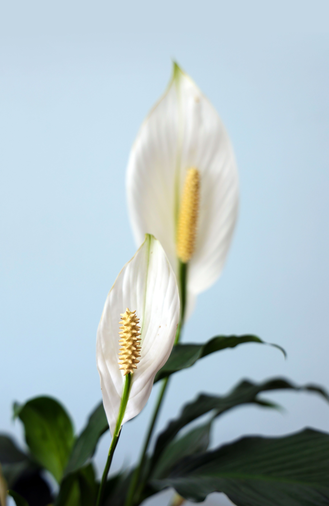

Every plant deserves to thrive.
Explore care guides for 5 plants. Share your own. Ask questions. Build your green world with confidence.

The Garden
Click any plant for full care instructions and community Q&A.
Monstera

Monstera is a tropical plant with large green leaves. It likes bright indirect light and regular watering.
Difficulty: Easy
Snake Plant

Snake Plant is an easy houseplant. It does not need much water and can grow in different light conditions.
Difficulty: Easy
Peace Lily

Peace Lily has beautiful green leaves and white flowers. It prefers indirect light and moist soil.
Difficulty: Medium
Fiddle Leaf Fig

Fiddle Leaf Fig is a popular indoor plant with large leaves. It needs bright light and regular care.
Difficulty: Medium
Orchid

Orchid is a beautiful flowering plant. It needs bright indirect light and careful watering.
Difficulty: Hard